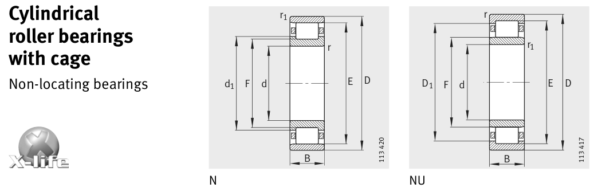

Original catalogue drawing - FAG Schaeffler HR 1, page 374

Scanned from the manufacturer catalogue page listing this part number. All part numbers printed on that table share the same drawing.
Scale cross-section
Blue = inner / outer ring, yellow = rolling element. Drawn to scale from this part's own
dimensions for selection reference only - not a manufacturing or assembly drawing.
Dimension table (mm / inch)
Symbol
Dimension
mm
inch
d
Bore diameter
120
4.7244
D
Outside diameter
260
10.2362
B
Inner-ring / bearing width
86
3.3858
r
Chamfer (min)
3
0.1181
E
Roller-set outside dia.
230
9.0551
F
Roller-set bore dia.
154
6.063
Notes
Weights are given in kg. Load ratings are shown in both the original catalogue units and the converted value (1 N = 0.2248 lbf). Data is provided for selection reference only - confirm against the latest official catalogue before ordering.
Main dimensions
Bore d (mm)
120
Outside dia. D (mm)
260
Width B (mm)
86
Inner-ring shoulder dia. D1 (mm)
218.7
Dimension E (mm)
230
Dimension F (mm)
154
Load ratings & speeds
Basic dynamic load rating Cr (lbs)
209072
Basic static load rating Cor (lbs)
227057
Basic dynamic load rating Cr (N)
930000
Basic static load rating C0r (N)
1.01e+06
Fatigue limit load Cur (N)
153000
Limiting speed nG (rpm)
4,300
Reference speed nB (rpm)
2,000
Weight
Weight (kg)
23.2
Mounting dimensions (fillets / shoulders)
Housing fillet r max (mm)
3
Chamfer r1 min (mm)
3
Shaft shoulder da (mm)
134
Shaft shoulder db (mm)
156
Housing shoulder Da (mm)
246
Housing fillet ra max (mm)
2.5
Housing fillet ra1 max (mm)
2.5
Bearing life (ISO 281 basic rating life)
C / P
Equivalent load P (N)
L10 (106 rev)
L10h at 1,400 rpm
4
232,500
102
1,209
6
155,000
392
4,673
8
116,250
1,024
12,190
10
93,000
2,154
25,648
15
62,000
8,323
99,089
Basic rating life per ISO 281: L10 = (C/P)10/3 with C = 930,000 N. Hours = L10 x 106 / (60n). Life-modification factors for lubrication, contamination and temperature (aISO) are not included.
Source & traceability
Brand
FAG
Source catalogue
FAG / Schaeffler Rolling Bearings HR 1
Catalogue page
p.374 (dimensions)
Load ratings in newtons, fatigue limit load Cur, limiting speed nG and reference speed nB.
Send us the quantity you need and we will come back with price and
lead time, normally within 24 hours. Equivalent parts from other brands can be quoted at the same time.